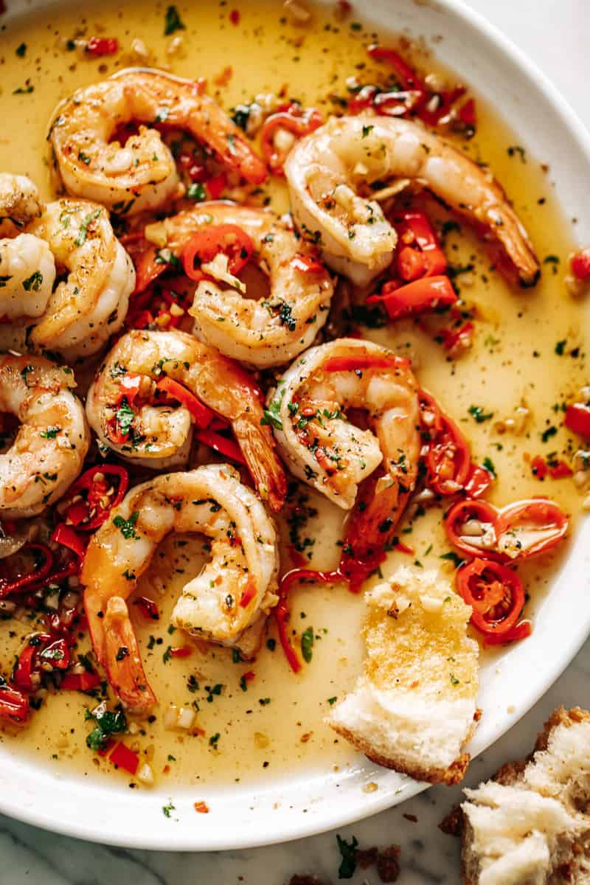

Chili oil shrimps

Qucik and easy meal with extra spiciness
We are taking the classic garlic butter shrimps and adding extra
spiciness. Only a few ingredients needed and it shouldn't take
you more than 15 mins to make it. You will be surprised
how tasty it is!
- 150g of shrimps
- butter and olive oil
- 3 cloves of garlic
- cherry tomatoes
- chili oil
- parsley
Steps
- Heat 1 tablespoon of olive oil and 2 teaspoons of butter in a saucepan.
- Add chopped garlic and cherry tomatoes and fry them over medium heat.
- Add cleaned shrimps and fry until they're light brown.
- Add 1 teaspoon of chili oil and a hanful of parsley and mix all well.
- Serve pipping hot. Best served with toasted bread.